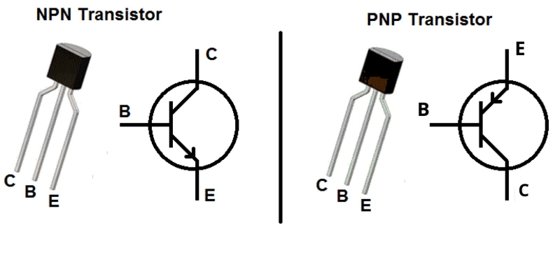

Links
- Soziale Medien
- Hyperloop Projekt
- IoT Projekte
- Elektronik
- Transistoren
- Mosfet
- BJT
- IGBT
- CAD (Fusion 360)
- Zahnräder
- Netzwerk
- VPN Tunnel und Remote Access
- MQTT
- Node Red
- Raspberry Pi
- Pi-hole
- Zwischenablage

PNP- und NPN-Transistoren gehören zur Familie der bipolaren Transistoren. PNP steht für "positiv-negativ-positiv", während NPN für "negativ-positiv-negativ" steht. Diese Transistoren bestehen aus drei Schichten von Halbleitermaterialien und können als Verstärker oder Schalter dienen. Bei einem PNP-Transistor fließt der elektrische Strom von der Basis zu dem Emitter, während bei einem NPN-Transistor der Strom von dem Emitter zur Basis fließt (techn. Stromrichtung).
Emitter (Drain): Anschluss Richtung (-)
Basis (Gate): Ansteuerung.
Kollektor (Source): Anschluss Richtung (+)
Im zugehörigem Datenblatt stehen Informationen Höchstspannung (VGS) und Schwellspannung.
Zwischen Basis und Emitter ist eine Kapazität. Diese wird beim Einschalten geladen und hält den Transistor aktiv. Zum Abschalten muss die Kapazität abgeleitet werden.
Die Ausschaltzeit (Fall Time: tf) ist länger wie die Einschaltzeit (Fall Time: tr). Das bedeutet bei Brückenschaltungen entsteht für kurze Zeit ein Kurzschluss wenn sich die Zeiten überschneiden.
Der MOSFET (Metal-Oxide-Semiconductor Field-Effect Transistor) ist ein Transistor, der auf dem Prinzip der Feldwirkung basiert. Er bestehen aus einem Metal-Gate, einem Isolator und einem Halbleiter. Er kombiniert bis zu einem gewissen Grad geringe Verlustleistung und schnelle Schaltgeschwindigkeit.
Bei Mosfets ist der Emitter leitend mit dem Kühlkörper verbunden. Sollen mehrere Mosfets über einen Kühlkörper gekühlt werden, müssen diese voneinander Isoliert werden. Dies gilt auch für die Montageschraube.
Der BJT (NPN-Junction-Transistor) ist eine spezielle Form des NPN-Transistors. Diese Transistoren bestehen aus drei Halbleiterschichten, wobei der Stromfluss von der Emitter-Region zur Basis-Region und schließlich zur Collector-Region erfolgt. NJTs werden in Hochfrequenzanwendungen eingesetzt.
Der IGBT (Insulated Gate Bipolar Transistor) kombiniert die Vorteile von MOSFETs und bipolaren Transistoren. Sie haben eine Gate-Isolatorschicht wie MOSFETs, aber einen bipolarartigen Stromfluss. Verwendet in Hochleistungsanwendungen wie Motorsteuerungen bis über 500kw.
Um Zahnräder in Fusion 360 zu generieren wird das Spur-Gear-Script verwendet, zu finden unter Dienstprogramme, Scripte.
Zum Generieren eines Zahnrades passend zu einem vorhandenem Zahnrad werden drei Angaben benötigt: Die Zahnanzahl, den Druckwinkel, und das Modul
Der Druckwinkel (Pressure Angle) beschreibt den Winkel zwischen Zahnfläche und Zahntangente, also wie spitz der Zahn zuläuft. Dieser liegt üblicherweise bei 20°, Spur-Gear schlägt auch 14,5° und 25° vor. Das Modul ist der auf die Zahl der Zähne bezogene Teilkreis-Durchmesser eines Zahnrades und bestimmt somit die Größe des Zahnes. Es wird berechnet aus Durchmesser durch Zahnanzahl.
m=d/z
Zum Generieren eines passenden Zahnrades mit anderer Zahnanzahl oder anderem Durchmesser wird das Modul zur Berechnung der jeweils fehlenden Größe verwendet. Für das Modul gibt es standartisierte Größen in der DIN 780 Reihe I. Ist die Berechnug ungenau, sollte der nächstpassende Wert aus dieser Reihe verwendet werden.
Das Spur-Gear-Script berechnet automatisch den größtmöglichen Radius bis zum Zahnholraum (Root Fillet Radius). Dieser ist zu verwenden.
Zahnraddicke und Lochdurchmesser könn frei gewählt werden, wobei der Lochradius nicht größer wie der Radius bis zum Zahnholraum sein darf.
In den meisten Routern (Speedport) lässt sich ein Virtuelles Netzwerk einrichten. Es wird ein Schlüsses generiert mit dem sich über z. B. WireGuard verbunden werden kann. Das Endgerät agiert nun auch von anderen Netzwerken aus als wäre es im Heimnetzwerk. Andere Geräte wie Router, Heimserver, oder Microcontroller lassen sich nun direkt über ihr IP aufrufen.
Die permanente Nutzung dieser art VPN benötigt allerding eine statische IP-Adressen vom Provider. In den meisten Privatverträgen ist dies nicht vorgesehen. Es is eine regelmäßige Erneuerung des VPN erforderlich.
MQTT (Message Queuing Telemetry Transport) ist ein Protokoll, dass für die Übertragung von Nachrichten zwischen Geräten in IoT (Internet of Things)-Umgebungen entwickelt wurde.
Verwendet wird das Publish/Subscribe-Modell, bei dem Geräte als Publisher Nachrichten veröffentlichen können, die dann von anderen Geräten als Subscriber abonniert werden können. Alle Nachrichten laufen über einen Broker, dem MQQT service er befindet sich auf einem Gerät im Netzwerk.
Es werden drei verschiedene QoS-Level (Quality of Service) unterstützt, die die Zuverlässigkeit der Nachrichtenübertragung steuern. Stufe 0 reicht für die Nutzung in einem Heimnetzwerk völlig aus.
Typischerweise werden JSON, XML, binäre Daten oder Text versendet. JSON bietet sich an, da es von allen Programmiersprachen leicht verarbeitet werden kann.
Node-RED basiert auf JavaScript und ist eine überwiegend intuitive grafische Oberfläche, mit der sich Daten aus dem Netzwerk im Netzwerk visualisieren lassen.
Zum Betrieb eines Raspberry Pi (5) wird ein 5V 2A USB-C Netzteil benötigt. Für das OS wird eine Class 10 micro SD Karte verwendet. Mit dem passendem micro sd Kartenleser wird mit einem Windows PC das Raspberry OS mit der offiziellen Software auf die SD Karte geflashed. Dies reicht theoretisch zum Aufsetzten des Raspis. Einfacher wird es mit Netzwerkleitung, USB-A Maus und Tastatur sowie mit einem via Micro HDMI anschließbarem Monitor. Die Auflösung sollte auf 1080p reduziert werden.
Dem Raspberry sollte im Netzwerk eine feste IP-Adresse vergeben werden. Zur remote Verbinung mit dem Raspi wird die Freeware Putty oder Windows Remotedesktop verwendet. Dadurch ist es nicht erforderlich den Raspi mit Peripherie zu verbinden.
Auf dem Raspi kann nun MQTT und node Red installiert und dem Autostart hinzugefügt werden. Auf die Programmieroberfläche von Node-Red lässt sich mit dem Port :1880 zugreifen.
Soziale Medien